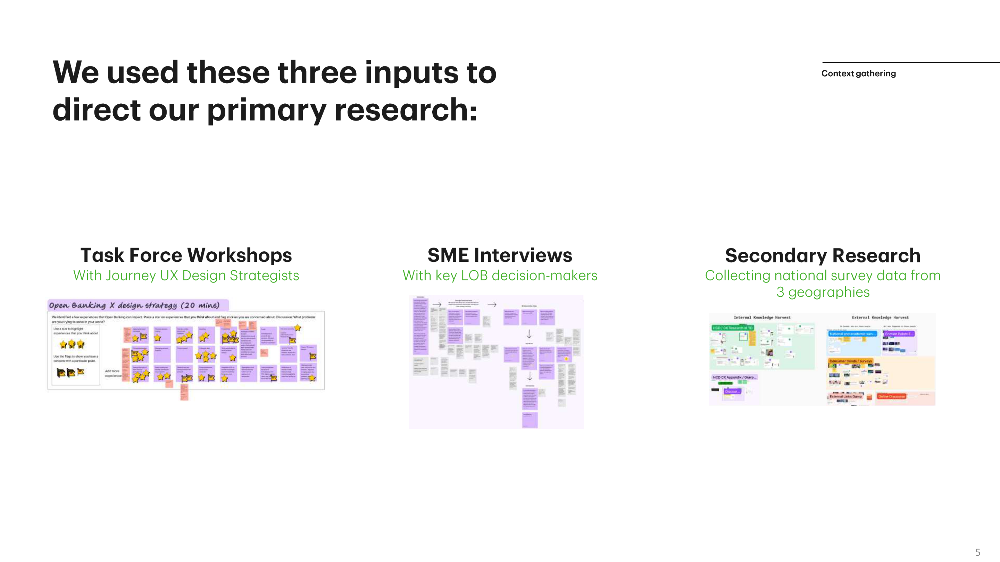
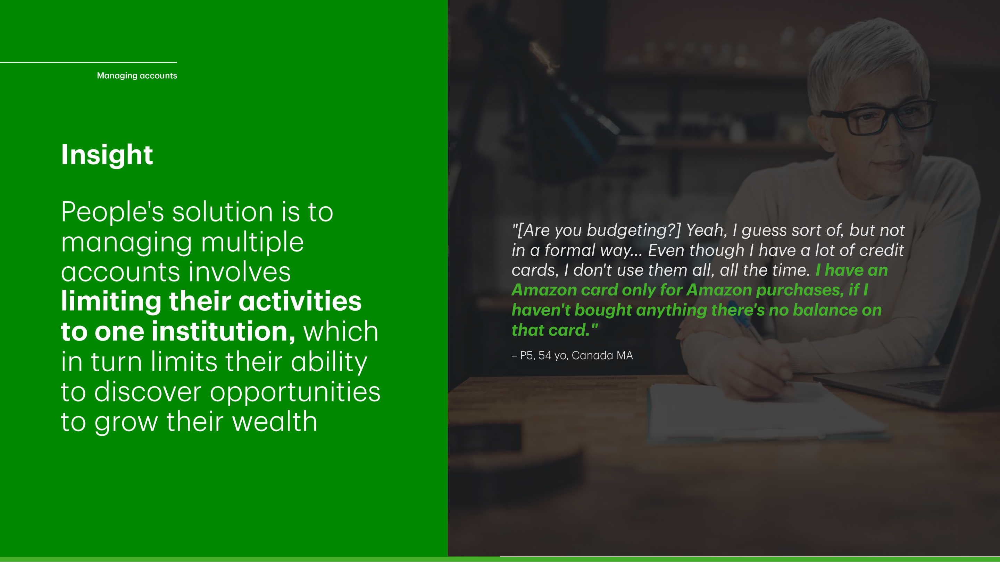

What does the bank need to know before it can seize Open Banking opportunities?

Task Force workshops with embedded design professionals.
SME interviews with key decision-makers across LOBs.
We consulted with 8 HCD Strategists and Design Leads working across the bank's Journeys.
People don't really care about how their data is handled when they're getting convenient solutions.
We interviewed 9 experts and key decision-makers across the bank's workstreams in Canada and the US.
| The LOB | Key segments | Their Open Banking Strategy |
|---|---|---|
| Credit Cards |
N2C with credit outside Canada |
|
| Everyday Advice Journey |
|
|
| TD Direct Investing | Mass Affluent |
|
| Wealth Advice Journey | High-net-worth clients |
|
1. What pain points do users with multiple FIs experience?
2. In what situations would those users decide that the risk is worth the benefit of sharing personal data?
We also screened for behaviors that let us speak to workstream-specific concepts:
| 20 | Chequing and savings accounts at multiple FIs |
| 17 | Using or have used a fintech company |
| 12 | Have previously dealt with fraud |
| 19 | Credit card users · Credit Cards (US and Canada) |
| 12 | Self-directed investors, 4 trading at least monthly · TD Direct Investing |
| 3 | Applied for a mortgage within the last year · Everyday Advice Journey Credit Risk |
How TD could win: Bigger banks are safer places to share data
"I trust bigger establishments, and bigger banks. I figure these guys have millions of customers, they've been doing this a long time. And they have a reputation. They have a microscope on them, and if they play around with that, they're going to suffer the consequences."
— P3, 51 yo, USA Mass Market
Reputation and scale are TD's advantage — customers assume big banks face more scrutiny and therefore behave more responsibly with their data.
Most Canadians don't realize how many accounts they're actually juggling.
Our participants juggled multiple credit cards and investing platforms. People hold accounts at multiple banks for three reasons: product-seeking (a better offer elsewhere), diversification (spreading risk), or rejection (getting a loan at a new institution).
No easy overview. People use spreadsheets and manual tracking.
There are way too many credit cards to choose from.
Tracking payment schedules across multiple institutions is a constant struggle.
Loan and mortgage approvals feel arbitrary. People don't understand why one bank approves and another rejects.
Jumping between Questrade, Wealthsimple, and others for different markets creates friction — and missed opportunities.
People want one consolidated view of total wealth across all platforms.
Embedded from the original deck — slide 24, "Managing accounts"

Original insight: by limiting themselves to one institution, customers also limit their opportunities to grow wealth.
We asked participants to sort three specific data-sharing behaviours. The pattern wasn't random — each behaviour lives at a different stage of public acceptance, and the middle is exactly where Open Banking sits today.
It feels low stakes, but customers remember when they hesitated to do it.
Opinions divided sharply. Americans more open.
Most said “never” — that pattern's already changed in the time since this study (2024).
People test the waters with throwaway data before committing to the real thing.
"I did go through the process [moving money from CIBC to Tangerine] a couple of times without — entering fake information to see, OK, well, what do they need? And then becoming comfortable with that process before I said, OK, go."
P4 · 49 yo · Canada Mass AffluentReviews, forum threads, Reddit — people audit the social trust signals before trying something new.
"I think the confidence comes from — what's the fall-back plan? What happens if I get breached? So I look at the whole picture to sort of get that confidence in it."
P16 · 42 yo · Canada Mass MarketMass usage is the safety net — people defer to the crowd.
"The amount of people using [UPI] shows me that the confidence in that system is huge. So if I was hesitant, I would just look at tens of thousands of people using it with no issues."
P16 · 42 yo · Canada Mass MarketTrust ladders through people whose judgement they already respect.
"I have certain people in my life where I'm like, oh, okay, if he's using that thing or that app, then it must be okay… My brother is an audio engineer so if he bought those headphones, they're good… If he was using a specific app, I would probably think it was okay."
P20 · 36 yo · USA Mass Market| Task | Unmet needs | Open Banking concept |
|---|---|---|
| Budgeting | Smart insights about spending habits and a financial bird's-eye view | An aggregated spending and saving view that connects accounts across institutions. |
| Paying Bills | Help managing bill payment schedules across multiple institutions | A bill calendar that consolidates payment due dates across all institutions. |
| Direct Investing | Manage and grow investments across multiple platforms without the friction | A unified portfolio view with seamless cross-platform money movement. |
| Credit Cards | A shopping experience that helps maximize rewards and minimize fees | A portal to match people to the right card (internal and external) for their spending pattern. |
| Borrowing | Faster applications and transparency in how banks make approval decisions | A multi-lender overview that makes approval logic transparent and applications faster. |
We unblocked designs for Open Banking by establishing foundational principles so the workstreams could continue to build. More importantly, we made contact with Enterprise teams and helped HCD move the needle on generative and foundational research.